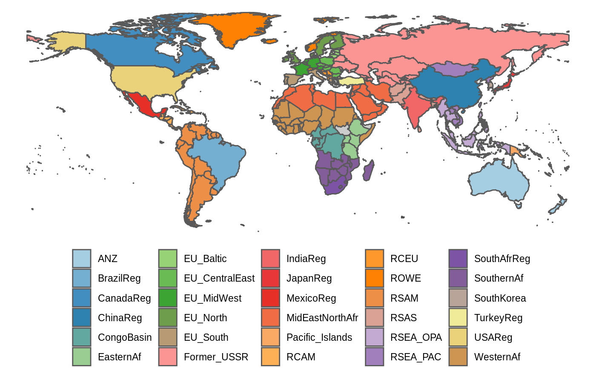

For global analyses, GLOBIOM results are often presented for 30 major regions (ANYREGION). This vignette provides an example on how to put the results on a map. A world map that includes a mapping to the 30 GLOBIOM regions is included in the package and can be easily loaded (see below).
Plotting the world map with GLOBIOM regions is very similar to the procedure described to create the the EU NUTS map so we will only provide a brief illustration here.
library(globiomvis)
library(ggplot2)
library(sf)
library(dplyr)
# Load the world map
world_poly <- st_read(system.file("shp", "region30.shp", package = "globiomvis"))
#> Reading layer `region30' from data source `/tmp/RtmpJPmsXu/temp_libpath3f673536d0f1/globiomvis/shp/region30.shp' using driver `ESRI Shapefile'
#> Simple feature collection with 244 features and 10 fields
#> geometry type: MULTIPOLYGON
#> dimension: XY
#> bbox: xmin: -180 ymin: -89.9989 xmax: 180 ymax: 83.5996
#> epsg (SRID): 4326
#> proj4string: +proj=longlat +datum=WGS84 +no_defs
# We remove Antartica
world_poly <- world_poly %>%
filter(iso3c != "ATA")
# As the palette has only 9 colors and we need 30, we need to interpolate additional colors.
library(RColorBrewer)
n_col = length(unique(world_poly$ANYREGION))
getPalette = colorRampPalette(brewer.pal(12, "Paired"))
# Create the world map showing the GLOBIOM regions.
# We add a grey background map that will show polygons not included in ANYREGION.
ggplot() +
geom_sf(data = world_poly, colour = "grey30", fill = "grey80") +
geom_sf(data = filter(world_poly, !is.na(ANYREGION)), aes(fill = ANYREGION)) +
theme_void() +
theme(legend.position = "bottom") +
labs(fill = NULL) +
scale_fill_manual(values = getPalette(n_col))